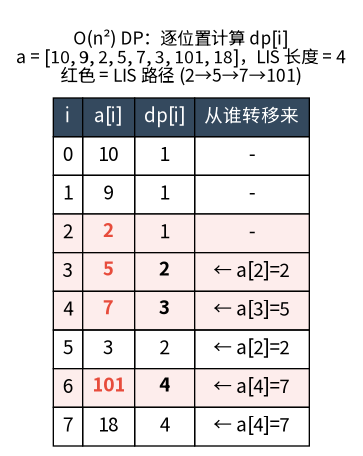
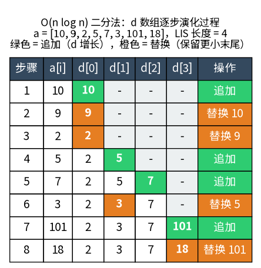

Dynamic programming
2026-04-10
动态规划类问题
线性 DP
Longest increasing subsequence
给定序列 \(a_1, a_2, \ldots, a_n\)，求最长的严格递增子序列（LIS）的长度
子序列：不需要连续，保持原顺序即可
\(O(n^2)\) DP
状态: 维护一个数组 \(dp\)，\(dp[i]\) 表示以 \(a_i\) 结尾的 LIS 长度
\[ dp[i] = \max_{j < i,\ a_j < a_i}(dp[j] + 1) \]
代码:
def lis(a):
n = len(a)
dp = [1] * n
for i in range(n):
for j in range(i):
if a[j] < a[i]:
dp[i] = max(dp[i], dp[j] + 1)
return max(dp)例子:

\(O(n \log n)\) 二分
状态：维护一个数组 \(d\)，\(d[k]\) （1-based）表示当前所有长度为 \(k\) 的递增子序列的最小末尾元素： 即存在长度为 \(k\) 的递增子序列 \(S_k: S_k[1], ..., S_k[k]\)，其结尾 \(S_k[k]\) 是所有长度同为 \(k\) 的递增子序列的末尾元素里最小的， 将它记为 \(d[k]\)
性质：\(d\) 严格递增，因为若 \(i \lt j\) 则
\[d[i] \le S_j[i] < S_j[j] = d[j]\]
这里第一个小于等于号是因为 \(S_j\) 的前 \(i\) 个元素 \(S_j[1], ..., S_j[i]\) 也是一个长度为 \(i\) 的递增子序列
构造：遍历每个 \(a_i\)，在 \(d\) 中二分（因为 \(d\) 严格递增）找到第一个 \(\geq a_i\) 的位置并替换；若 \(a_i\) 大于所有元素则追加到 \(d\)
说明：假设当前状态为
\[ \begin{split} ... \\ S_{k-1} &: & \quad S_{k-1}[1], & \quad ..., & \quad \mathbf{S_{k-1}[k-1]}. & \quad \\ S_k &: & \quad S_k[1], & \quad ..., & \quad S_k[k-1], & \quad \mathbf{S_k[k]}. \\ ... \\ \end{split} \]
同时假设新的元素 \(a_i\) 满足 \(S_{k-1}[k-1] \lt a_i \le S_{k}[k]\)
- 此时 \(S_{k-1}\) 加上 \(a_i\) 是一个新的长度为 \(k\) 的序列且末尾元素比 \(S_k\) 更小， 所以可以把 \(a_i\) 替换到 \(d[k]\)
- 对 \(j < k\)，\(d[j]\) 不会有变化因为本来都小于 \(a_i\)
- 对 \(j > k\)，\(d[j]\) 也不会有变化，否则如果也变为 \(a_i\)（也只能变为 \(a_i\)）就跟 \(d\) 严格递增矛盾了
直觉：末尾越小，后续能接上的元素越多，保留最优潜力
代码:
from bisect import bisect_left
def lis(a):
d = []
for x in a:
pos = bisect_left(d, x)
if pos == len(d):
d.append(x)
else:
d[pos] = x
return len(d)例子:

注意：
d本身不一定是合法的 LIS，但长度正确
\(O(n^2)\) DP 的不可替代性 (AI gen|not verified)
二分法只给出 LIS 长度，而 \(O(n^2)\)
DP 计算了每个位置的 dp[i]。当需要逐位置的
dp 值作为子结构时，二分法无法胜任：
- 求 LIS 的个数：需要
dp[i]+count[i]配合 - 组合类问题：“至少删多少元素使数组有序”、“有多少种方案能得到 LIS” 等
- 固定位置的 LIS 长度：“以第 \(i\) 个元素结尾的 LIS 有多长”
变体 (AI gen|not verified)
- 非严格递增：
bisect_left→bisect_right - 还原具体 LIS：用 \(O(n^2)\) DP + 前驱记录，或对二分法额外维护
prev数组
Longest common subsequence (LCS)
给定序列 \(a\)（长度 \(m\)）和 \(b\)（长度 \(n\)），求最长的公共子序列
公共子序列：存在一个序列 \(c\)，它既是 \(a\) 的子序列也是 \(b\) 的子序列。即可以从 \(a\) 中删去若干元素（不改变顺序）得到 \(c\)，同样也可以从 \(b\) 中删去若干元素得到 \(c\)
例：\(a = \text{ABCBDAB}\)，\(b = \text{BDCAB}\)，则 LCS 为 \(\text{BCAB}\)（长度 4）
状态：\(dp[i][j]\) 表示 \(a[0..i-1]\) 与 \(b[0..j-1]\) 的 LCS 长度
\[ dp[i][j] = \begin{cases} dp[i-1][j-1] + 1 & \text{if } a[i-1] = b[j-1] \\ \max(dp[i-1][j],\ dp[i][j-1]) & \text{otherwise} \end{cases} \]
代码：
def lcs(a, b):
m, n = len(a), len(b)
dp = [[0] * (n + 1) for _ in range(m + 1)]
for i in range(1, m + 1):
for j in range(1, n + 1):
if a[i-1] == b[j-1]:
dp[i][j] = dp[i-1][j-1] + 1
else:
dp[i][j] = max(dp[i-1][j], dp[i][j-1])
return dp[m][n]空间优化：每行只依赖上一行，可滚动数组压缩到 \(O(\min(m,n))\)
与 LIS 的关系：若 \(a, b\) 均为排列（无重复元素），可将 LCS 转化为 LIS —— 把 \(b\) 中每个元素在 \(a\) 中的位置映射出来，对该映射序列求 LIS 即为 LCS，从而可 \(O(n \log n)\) 求解
编辑距离 (Edit Distance)
给定字符串 \(a\)（长度 \(m\)）和 \(b\)（长度 \(n\)），求将 \(a\) 变成 \(b\) 的最少操作次数（Levenshtein 距离），每次操作为插入、删除、替换一个字符
状态：\(dp[i][j]\) 表示 \(a[0..i-1]\) 变成 \(b[0..j-1]\) 的最少操作次数
\[ dp[i][j] = \begin{cases} dp[i-1][j-1] & \text{if } a[i-1] = b[j-1] \\ 1 + \min(dp[i-1][j],\ dp[i][j-1],\ dp[i-1][j-1]) & \text{otherwise} \end{cases} \]
边界：\(dp[i][0] = i\)（删除 \(i\) 个），\(dp[0][j] = j\)（插入 \(j\) 个）
说明：\(a[i-1] \neq b[j-1]\) 时，最后一步操作必为以下三者之一：
- 删除 \(a[i-1]\) → \(a[0..i-2]\) 变成 \(b[0..j-1]\)，即 \(dp[i-1][j] + 1\)
- 插入 \(b[j-1]\) → \(a[0..i-1]\) 变成 \(b[0..j-2]\)，即 \(dp[i][j-1] + 1\)
- 替换 \(a[i-1]\) 为 \(b[j-1]\) → \(a[0..i-2]\) 变成 \(b[0..j-2]\)，即 \(dp[i-1][j-1] + 1\)
更远的子问题（如 \(dp[i-2][j]\)）已包含在这些状态的递推路径中，无需额外考虑
代码：
def edit_distance(a, b):
m, n = len(a), len(b)
dp = [[0] * (n + 1) for _ in range(m + 1)]
for i in range(m + 1):
dp[i][0] = i
for j in range(n + 1):
dp[0][j] = j
for i in range(1, m + 1):
for j in range(1, n + 1):
if a[i-1] == b[j-1]:
dp[i][j] = dp[i-1][j-1]
else:
dp[i][j] = min(dp[i-1][j], dp[i][j-1], dp[i-1][j-1]) + 1
return dp[m][n]与 LCS 的关系：若只允许插入和删除（不允许替换），则 \(\text{edit\_dist} = m + n - 2 \cdot \text{LCS}(a, b)\)
最长回文子序列 (LPS)
给定字符串 \(s\)（长度 \(n\)），求最长的回文子序列
回文子序列：从 \(s\) 中删去若干字符后，剩余字符构成一个回文串（正读反读相同）。与子串不同，子序列不需要连续
例：\(s = \text{BBABCBCAB}\)，LPS 为 \(\text{BABCBAB}\) 或 \(\text{BBCACBB}\)（长度 7）
状态：\(dp[i][j]\) 表示子串 \(s[i..j]\) 中的 LPS 长度
转移直觉：考虑两端字符 \(s[i]\) 和 \(s[j]\)：
- 相等时：两端都可以纳入回文，因此 LPS 长度 = 去掉两端后的 LPS + 2
- 不等时：至少要舍弃其中一端，取 \(\max\) 较优
\[ dp[i][j] = \begin{cases} 1 & i = j \\ dp[i+1][j-1] + 2 & s[i] = s[j],\ i+1 \le j-1 \\ 2 & s[i] = s[j],\ i+1 > j-1 \\ \max(dp[i+1][j],\ dp[i][j-1]) & \text{otherwise} \end{cases} \]
注意 \(i+1 > j-1\) 即 \(i = j - 1\)，此时两端恰好配对，贡献为 2
遍历顺序：区间长度从小到大（\(len = 2 \to n\)），因为 \(dp[i][j]\) 依赖 \(dp[i+1][j-1]\)、\(dp[i+1][j]\) 和 \(dp[i][j-1]\)（更短的子区间）
代码：
def lps(s):
n = len(s)
dp = [[0] * n for _ in range(n)]
for i in range(n):
dp[i][i] = 1
for length in range(2, n + 1):
for i in range(n - length + 1):
j = i + length - 1
if s[i] == s[j]:
dp[i][j] = dp[i+1][j-1] + 2 if i+1 <= j-1 else 2
else:
dp[i][j] = max(dp[i+1][j], dp[i][j-1])
return dp[0][n-1]技巧：LPS(\(s\)) = LCS(\(s\), reverse(\(s\)))——将 LPS 转化为 LCS 问题，无需区间 DP
最长回文子串
给定字符串 \(s\)（长度 \(n\)），求最长的回文子串（要求连续，区别于上面的子序列）
方法一：中心扩展 \(O(n^2)\)
每个位置（含间隙）作为回文中心向外扩展：
def longest_palindrome(s):
def expand(l, r):
while l >= 0 and r < len(s) and s[l] == s[r]:
l -= 1; r += 1
return s[l+1:r]
res = ""
for i in range(len(s)):
res = max(res, expand(i, i), expand(i, i+1), key=len)
return res方法二：Manacher \(O(n)\)
在字符间插入 #
统一奇偶长度，用已知回文右边界加速扩展：
def manacher(s):
t = '#' + '#'.join(s) + '#'
n = len(t)
p = [0] * n # p[i] = 以 i 为中心的最长回文半径
c = r = 0 # 当前中心及其右边界
for i in range(n):
if i < r:
p[i] = min(r - i, p[2*c - i])
while i-p[i]-1 >= 0 and i+p[i]+1 < n and t[i-p[i]-1] == t[i+p[i]+1]:
p[i] += 1
if i + p[i] > r:
c, r = i, i + p[i]
max_len = max(p)
center = p.index(max_len)
return s[(center-max_len)//2 : (center+max_len)//2]核心：当 \(i\) 在已知回文 \([c-(r-c), r]\) 内时，利用对称性得到 \(p[i]\) 的下界 \(= \min(r - i,\ p[\text{mirror}])\)
背包问题
核心设定：\(n\) 个物品，第 \(i\) 个重量 \(w_i\)、价值 \(v_i\)，背包容量 \(W\)，求最大价值
0-1 背包
每个物品至多选一次
状态：\(dp[j]\) 表示容量为 \(j\) 时的最大价值
\[ dp[j] = \max(dp[j],\ dp[j - w_i] + v_i) \quad \text{for } j \ge w_i \]
遍历顺序：\(j\) 从 \(W\) 到 \(w_i\) 倒序，保证每个物品只用一次（正序会重复选）
def knapsack_01(w, v, W):
n = len(w)
dp = [0] * (W + 1)
for i in range(n):
for j in range(W, w[i] - 1, -1):
dp[j] = max(dp[j], dp[j - w[i]] + v[i])
return dp[W]完全背包
每个物品可以选无限次
唯一区别：\(j\) 从 \(w_i\) 到 \(W\) 正序遍历，这样 \(dp[j - w_i]\) 可能已经包含了第 \(i\) 个物品，允许重复选
def knapsack_complete(w, v, W):
n = len(w)
dp = [0] * (W + 1)
for i in range(n):
for j in range(w[i], W + 1):
dp[j] = max(dp[j], dp[j - w[i]] + v[i])
return dp[W]记忆技巧：0-1 倒序（不回头），完全正序（可以回头再选）
多重背包
第 \(i\) 个物品最多选 \(c_i\) 次
朴素拆分 \(O(n \cdot W \cdot \sum c_i)\)
把 \(c_i\) 个物品拆成 \(c_i\) 个独立物品，退化为 0-1 背包
二进制优化 \(O(n \cdot W \cdot \sum \log c_i)\)
将 \(c_i\) 拆成 \(1, 2, 4, \ldots, 2^k, c_i - 2^{k+1} + 1\)，这些数的组合可以表示 \([0, c_i]\) 中任意整数
def knapsack_multi(w, v, c, W):
dp = [0] * (W + 1)
for i in range(len(w)):
cnt = c[i]
k = 1
while cnt > 0:
take = min(k, cnt)
wi, vi = w[i] * take, v[i] * take
for j in range(W, wi - 1, -1):
dp[j] = max(dp[j], dp[j - wi] + vi)
cnt -= take
k <<= 1
return dp[W]单调队列优化 \(O(n \cdot W)\)
对每个余数类 \(j \bmod w_i\) 分别用单调队列维护滑动窗口最大值，达到 \(O(nW)\)
分组背包
物品分为若干组，每组至多选一个
def knapsack_group(groups, W):
# groups[i] = [(w, v), ...]
dp = [0] * (W + 1)
for g in groups:
for j in range(W, -1, -1): # 组间 0-1
for w, v in g:
if j >= w:
dp[j] = max(dp[j], dp[j - w] + v)
return dp[W]注意内层 \(j\) 倒序是在组维度，保证每组只选一个；组内遍历所有物品取最优
背包问题对比
| 物品使用 | \(j\) 遍历方向 | 时间 | |
|---|---|---|---|
| 0-1 背包 | 至多一次 | 倒序 | \(O(nW)\) |
| 完全背包 | 无限次 | 正序 | \(O(nW)\) |
| 多重背包 | 最多 \(c_i\) 次 | 倒序 + 拆分 | \(O(nW\sum\log c_i)\) |
| 分组背包 | 每组至多一个 | 倒序（组间） | \(O(nW)\) |
区间 DP
核心特征：在区间 \([i, j]\) 上定义状态，由更小的子区间转移而来，通常按区间长度从小到大遍历
矩阵链乘法
给定矩阵序列 \(A_1, A_2, \ldots, A_n\)（\(A_i\) 的维度为 \(p_{i-1} \times p_i\)），求最小乘法次数
矩阵乘法满足结合律：\((A_1 A_2) A_3\) 和 \(A_1 (A_2 A_3)\) 结果相同但代价可能差很多。例如 \(A_1: 10 \times 100\)，\(A_2: 100 \times 5\)，\(A_3: 5 \times 50\)，前者代价 \(= 10 \times 100 \times 5 + 10 \times 5 \times 50 = 7500\)，后者 \(= 100 \times 5 \times 50 + 10 \times 100 \times 50 = 75000\)
状态：\(dp[i][j]\) 表示计算 \(A_i \cdots A_j\) 的最小代价
转移：枚举最后一次乘法的分割点 \(k\)（将链分成 \([i..k]\) 和 \([k+1..j]\) 两段分别计算，再把结果相乘）
\[ dp[i][j] = \min_{i \le k < j} \left( dp[i][k] + dp[k+1][j] + p_{i-1} \cdot p_k \cdot p_j \right) \]
其中 \(p_{i-1} \cdot p_k \cdot p_j\) 是两段结果矩阵相乘的代价：左边结果为 \(p_{i-1} \times p_k\)，右边为 \(p_k \times p_j\)
边界：\(dp[i][i] = 0\)
def matrix_chain(p):
# p[i-1] x p[i] = dim of A_i
n = len(p) - 1
dp = [[0] * (n + 1) for _ in range(n + 1)]
for length in range(2, n + 1):
for i in range(1, n - length + 2):
j = i + length - 1
dp[i][j] = float('inf')
for k in range(i, j):
dp[i][j] = min(dp[i][j],
dp[i][k] + dp[k+1][j] + p[i-1] * p[k] * p[j])
return dp[1][n]石子合并
\(n\) 堆石子排成一排，每次合并相邻的两堆为一堆，代价为两堆重量之和，求将全部石子合并为一堆的最小总代价
关键约束是”相邻”——这决定了只能按区间合并，而非任意选择两堆
状态：\(dp[i][j]\) 表示合并第 \(i\) 到第 \(j\) 堆的最小代价
\[ dp[i][j] = \min_{i \le k < j} \left( dp[i][k] + dp[k+1][j] \right) + \sum_{t=i}^{j} a_t \]
用前缀和 \(S[j] - S[i-1]\) 快速求区间和
def stone_merge(a):
n = len(a)
S = [0] * (n + 1)
for i in range(n):
S[i+1] = S[i] + a[i]
dp = [[0] * n for _ in range(n)]
for length in range(2, n + 1):
for i in range(n - length + 1):
j = i + length - 1
dp[i][j] = float('inf')
for k in range(i, j):
dp[i][j] = min(dp[i][j],
dp[i][k] + dp[k+1][j] + S[j+1] - S[i])
return dp[0][n-1]环形变体：断环成链，将数组复制一份接在后面，对长度为 \(n\) 的所有区间取最优（总长度 \(2n\)）
树形 DP
核心特征：在树上以子树为单位定义状态，后序遍历（先处理子节点再处理父节点）转移
树的最大独立集
选若干节点使相邻节点不同时被选中，求可选的最大数量
独立集：图中一组互不相邻的节点。例如社交网络中选一组互不认识的人
状态：对节点 \(u\)
- \(dp[u][0]\) = 不选 \(u\) 时子树的最大独立集
- \(dp[u][1]\) = 选 \(u\) 时子树的最大独立集
\[ dp[u][0] = \sum_{v \in \text{children}(u)} \max(dp[v][0],\ dp[v][1]) \]
\[ dp[u][1] = 1 + \sum_{v \in \text{children}(u)} dp[v][0] \]
def max_independent_set(adj):
def dfs(u, parent):
pick, skip = 1, 0
for v in adj[u]:
if v == parent: continue
cp, cs = dfs(v, u)
pick += cs
skip += max(cp, cs)
return pick, skip
pick, skip = dfs(0, -1)
return max(pick, skip)树的直径
树的直径 = 树上任意两节点间最长路径的长度（边数）
状态：\(dp[u]\) 表示从 \(u\) 出发往下走的最长路径长度
\[ \text{diameter} = \max_u \left( \text{top-2 of } \{dp[v] + 1 : v \in \text{children}(u)\} \text{ 之和} \right) \]
即对每个节点 \(u\)，取其子节点中最长和次长路径之和，取全局最大
def tree_diameter(adj):
ans = 0
def dfs(u, parent):
nonlocal ans
max1 = max2 = 0
for v in adj[u]:
if v == parent: continue
d = dfs(v, u) + 1
if d > max1:
max2, max1 = max1, d
elif d > max2:
max2 = d
ans = max(ans, max1 + max2)
return max1
dfs(0, -1)
return ans换根 DP
求以每个节点为根时的某个属性（如：子树大小之和、最远距离等）
思路：
- 第一遍 DFS：以任意节点（如 0）为根，算出所有节点的 dp 值
- 第二遍 DFS：利用父节点的结果推导子节点换根后的值
例子：求每个节点到所有节点的距离之和
状态：\(dp[u]\) = 以 0 为根时，\(u\) 的子树大小；\(ans[u]\) = 以 \(u\) 为根时的总距离
- 第一遍求 \(dp[u]\)（子树大小）和 \(ans[0]\)（以 0 为根的总距离）
- 第二遍换根：\(v\) 的父节点从 \(u\) 变为根时，\(v\) 子树内所有距离 \(-1\)，子树外所有距离 \(+1\)
\[ ans[v] = ans[u] - dp[v] + (n - dp[v]) \]
def reroot_distances(adj):
n = len(adj)
dp = [0] * n # subtree size
ans = [0] * n # distance sum
def dfs1(u, parent, depth):
dp[u] = 1
ans[0] += depth
for v in adj[u]:
if v == parent: continue
dfs1(v, u, depth + 1)
dp[u] += dp[v]
def dfs2(u, parent):
for v in adj[u]:
if v == parent: continue
ans[v] = ans[u] - dp[v] + (n - dp[v])
dfs2(v, u)
dfs1(0, -1, 0)
dfs2(0, -1)
return ans状态压缩 DP
用二进制整数表示集合状态，当 \(n \le 20\) 左右时可行
旅行商问题 (TSP)
\(n\) 个城市的完全图，求从城市 0 出发经过所有城市恰好一次并返回的最短路径
状态：\(dp[S][i]\) 表示已访问城市集合 \(S\)（bitmask），当前在城市 \(i\) 时的最短路径
\[ dp[S \cup \{j\}][j] = \min_{i \in S} (dp[S][i] + dist[i][j]) \]
边界：\(dp[\{0\}][0] = 0\)
def tsp(dist):
n = len(dist)
INF = float('inf')
dp = [[INF] * n for _ in range(1 << n)]
dp[1][0] = 0 # start at city 0
for S in range(1 << n):
for i in range(n):
if dp[S][i] == INF: continue
for j in range(n):
if S >> j & 1: continue
ns = S | (1 << j)
dp[ns][j] = min(dp[ns][j], dp[S][i] + dist[i][j])
# return to city 0
return min(dp[(1 << n) - 1][i] + dist[i][0] for i in range(n))时间 \(O(2^n \cdot n^2)\)，空间 \(O(2^n \cdot n)\)，适用于 \(n \le 20\)
棋盘覆盖 / 排列计数
在 \(n \times m\)（\(m\) 较小，通常 \(\le 10\)）的棋盘上放置棋子使互不攻击，求方案数
典型问题：\(n \times n\) 棋盘放 \(n\) 个皇后使互不攻击（N 皇后）、\(1 \times 2\) 骨牌铺满棋盘等。关键是将每行的放置状态编码为 bitmask
状态：\(dp[i][S]\) 表示处理到第 \(i\) 行，第 \(i\) 行放置状态为 \(S\)（bitmask）时的方案数
\[ dp[i][S] = \sum_{T \text{ compatible with } S} dp[i-1][T] \]
“compatible” = 相邻行之间满足约束（如不能同行同列攻击）
def chessboard_count(n, m, compatible):
# compatible(S, T) checks if row state S and prev row state T don't conflict
all_states = []
for S in range(1 << m):
if valid_single_row(S): # e.g. no adjacent pieces
all_states.append(S)
dp = {S: 1 for S in all_states}
for i in range(1, n):
ndp = {S: 0 for S in all_states}
for S in all_states:
for T in all_states:
if compatible(S, T):
ndp[S] += dp[T]
dp = ndp
return sum(dp.values())其他
数位 DP
统计 \([1, N]\) 中满足某条件的数的个数（如：不含 4，数字之和为 \(k\)，相邻位差不超过 2 等）
适用场景：\(N\) 很大（如 \(10^{18}\)）无法枚举，但数的”性质”只与各位数字有关
思路：从高位到低位逐位确定，用 lim
标记前缀是否等于 \(N\)
的前缀（影响当前位的上界）
状态：dfs(pos, lim, lead, ...) 其中
pos = 当前位，lim = 是否受 \(N\) 约束，lead =
是否有前导零，... 为题目特定的额外状态
def digit_dp(N):
s = str(N)
# 例：统计不含 '4' 的数的个数
from functools import lru_cache
@lru_cache(None)
def dfs(pos, lim):
if pos == len(s):
return 1
upper = int(s[pos]) if lim else 9
total = 0
for d in range(upper + 1):
if d == 4: continue # skip 4
total += dfs(pos + 1, lim and d == upper)
return total
return dfs(0, True) - 1 # exclude 0模板要点：
lim and d == upper传递约束；lru_cache在相同(pos, lim, ...)下复用结果
DAG 上的 DP
在有向无环图（DAG）上按拓扑序做 DP（如：最长路、最短路、路径计数、概率转移等）
DAG 的性质保证无环，因此可以线性化处理。任何有环图需先判环或转化为 DAG
步骤：
- 拓扑排序得到节点顺序
- 按拓扑序遍历，每个节点从其前驱转移
from collections import deque
def dag_dp(adj, n, src):
# 例：求 DAG 上从 src 到各节点的最长路
indeg = [0] * n
for u in range(n):
for v in adj[u]:
indeg[v] += 1
q = deque([i for i in range(n) if indeg[i] == 0])
topo = []
while q:
u = q.popleft()
topo.append(u)
for v in adj[u]:
indeg[v] -= 1
if indeg[v] == 0:
q.append(v)
dist = [float('-inf')] * n
dist[src] = 0
for u in topo:
if dist[u] == float('-inf'): continue
for v in adj[u]:
dist[v] = max(dist[v], dist[u] + 1) # edge weight = 1
return dist记忆化搜索写法更简洁：直接
dfs(u)返回从 \(u\) 出发的最优值，用@lru_cache避免重复计算，天然处理拓扑序